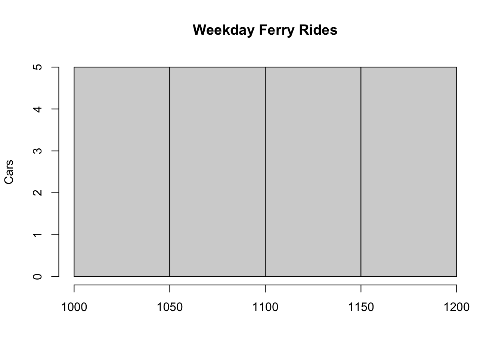
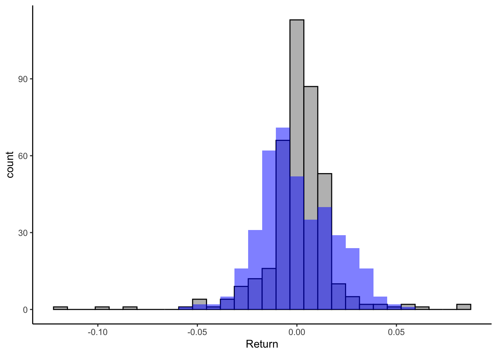

x<-52 Tools for Working With Simulation
Business simulation is a type of computer-based modeling that allows us to experiment and analyze different business scenarios and strategies. Its appeal comes from being a cost-effective way to explore and test business decisions in production, marketing, finance, and operations, among many others.
We will be using R to conduct business simulation. Before we can build our simulation models, we must learn the tools to perform the analysis. In this module, we’ll learn how to store data in R, generate random numbers, use loops and conditionals, and transform vectors to simulate real data.
2.1 Storing Our Data in R
Objects, vectors, and data frames are all critical in the R programming language. They are helpful when storing and manipulating data in R. An object is a container for storing data and computations in R. It can store something as simple as a single integer or as informative as the output in regression analysis. The code below creates an object x that stores the number \(5\).
Vectors are one-dimensional data arrays that can be stored in an object. They can contain elements of various data types, such as numerical values, character, or logical values (i.e., TRUE or FALSE). However, every component of the vector must be the same data type. Below, the vector Books stores the titles of \(5\) monster classics a bookstore plans to release.
books<-c("Frankenstein","Dracula","Moby Dick",
"War Of The Worlds","Beowulf")Lastly, a data frame, is a two-dimensional data table with rows and columns. Each column in a data frame represents a different variable, and each row represents a single observation or record. Think of a data frame as a collection of related vectors. We can easily construct a data frame by combining one or more vectors using the data.frame() function in R.
data.frame(Books=c("Frankenstein","Dracula",
"Moby Dick",
"War Of The Worlds","Beowulf"),
Price=c(9.5,5.78,6.34,5.67,2.45)) Books Price
1 Frankenstein 9.50
2 Dracula 5.78
3 Moby Dick 6.34
4 War Of The Worlds 5.67
5 Beowulf 2.452.2 Generating Random Numbers in R
Several functions are available in R that can be used to generate random numbers. These functions are based on a specific probability distribution. For instance, the rbinom() function generates random numbers based on the binomial distribution, while the runif() and rnorm() functions generate random numbers based on the uniform and normal distributions, respectively. The table below lists some functions that generate random numbers and their probability distribution.
| Distribution | Family | Package | Function |
|---|---|---|---|
| Uniform | Discrete | extraDistr | rdunif() |
| Binomial | Discrete | Base R | rbinom() |
| Hypergeometric | Discrete | Base R | rhyper() |
| Poisson | Discrete | Base R | rpois() |
| Uniform | Continuous | Base R | runif() |
| Normal | Continuous | Base R | rnorm() |
| Exponential | Continuous | Base R | rexp() |
| Triangle | Continuous | extraDistr | rtriang() |
Recall that the binomial distribution illustrates the probability of x successes from an experiment with n trials. We can use the distribution to generate random numbers by providing the probability of success (p) and the number of trials (n) parameters. Similarly, the uniform distribution shows the probability of a random variable within a minimum and maximum limit. Hence, we can generate random numbers from the distribution by providing the minimum and the maximum. In general, we can generate random numbers that follow a variety of distributions by providing the required arguments to the particular random number generator needed.
2.3 Nightmare Reads Simulates Demand
Nightmare Reads bookstore wishes to determine how many customers will buy their Monster Classic Series. They plan to send \(100\) catalogs by mail to potential customers. Before they send the catalogs, they decide to get an estimate on demand. Past data reveals that a customer will buy a book from the catalog with a probability of \(0.70\). Using R, they simulate the demand generated by their catalog.
(MS<-data.frame(Books=c("Frankenstein","Dracula",
"Moby Dick",
"War Of The Worlds","Beowulf"),
Price=c(9.5,5.78,6.34,5.67,2.45),
Demand=rbinom(5,100,0.7))) Books Price Demand
1 Frankenstein 9.50 74
2 Dracula 5.78 75
3 Moby Dick 6.34 70
4 War Of The Worlds 5.67 70
5 Beowulf 2.45 67The demand for the book is generated using the rbinom() function. The first input of the rbinom() function specifies how many random numbers are needed (\(5\)), the second one specifies the number of trials in the experiment (\(100\)), and the last one specifies the probability of success (\(0.7\)). The bookstore can now assess the Monster Series’s revenues with these demands.
2.4 Using Loops in R
Loops and conditionals are extremely useful when creating our simulation models. Among the many benefits, they will allow us to quickly generate new variables for our model or test different variations of our parameters to see how the model behaves.
A loop is a programming construct that allows you to repeat a block of code a specified number of times or until a specific condition is met. There are several types of loops in R, including for loops, which execute a block of code for a fixed number of iterations, and while loops, which execute a block of code as long as a particular condition is true. Let us illustrate the syntax of the for loop by simulating demand for each book Monster Classics series and calculating the total revenue.
Revenue<-c()
for (i in MS$Price) {
Revenue<-c(Revenue,i*rbinom(1,100,0.7))
print(Revenue)
}[1] 627
[1] 627.0 346.8
[1] 627.00 346.80 424.78
[1] 627.00 346.80 424.78 385.56
[1] 627.00 346.80 424.78 385.56 191.10The code above starts by creating an empty vector to store the revenue generated by each book. A for loop is then used to simulate the revenue for each book. The process starts by taking the first price in the MS$Price vector and multiplying it with a single random number drawn from the binomial distribution with \(100\) trials and probability \(0.7\) (our simulated demand). Note how the code combines the Revenue vector with the revenue generated by the simulation in the code c(Revenue, i*rbinom(1,100,0.7). This process is repeated for every number in the MS$Price vector, leading to a final vector with each book’s revenues.
We can avoid the use of the for loop by combining the Demand and Price vectors. Generally speaking, vectorization allows us to perform an operation to the entire vector at once, rather than having to iterate through each element one by one. When possible try to vectorize the problem as this operation is more efficient than using for loops.
Revenue<-MS$Demand*MS$Price
Revenue[1] 703.00 433.50 443.80 396.90 164.152.5 Using Conditionals in R
Conditionals allow you to execute different code blocks based on whether a certain condition is true or false. The most common type of conditional in R is the if-else statement, which executes one block of code if a condition is true and a different block of code if the condition is false.
Let us go back to the Monster Classic example and assume that the bookstore has gained additional insight into the demand for their collection. In particular, assume that if the book is either Frankenstein or Dracula, the probability of a customer buying it is \(0.9\) (the probability of the other books remains at \(0.7\)). We can now modify our demand simulation using a loop and a conditional.
demand<-c()
for (i in MS$Books){
if (i=="Frankenstein"| i=="Dracula"){
p=0.9
}
else {p=0.7}
demand<-c(demand,rbinom(1,100,p))
}
print(demand)[1] 91 91 70 67 66In the code above, the inner conditional checks whether the titles are either Frankenstein or Dracula. If so, the random binomial number is drawn with the probability \(0.9\). If not, it is drawn with probability \(0.7\). The for loop, goes through all the books in the series and adds a simulated demand. Below is our data frame with the new simulated values.
(MS<-data.frame(Books=c("Frankenstein","Dracula",
"Moby Dick",
"War Of The Worlds","Beowulf"),
Price=c(9.5,5.78,6.34,5.67,2.45),
Demand=demand)) Books Price Demand
1 Frankenstein 9.50 91
2 Dracula 5.78 91
3 Moby Dick 6.34 70
4 War Of The Worlds 5.67 67
5 Beowulf 2.45 66We can simplify this calculation by using a function to modify the vector of books (i.e. vectorization). In particular, the ifelse() function allows us to take the Books variable and transform it to a vector of demands. The first argument of the ifelse() function is the logical condition (i.e. Books==“Frankenstein”| Books==“Dracula”), the second argument is the action to be taken when the condition holds true (i.e. rbinom(length(MS$Books),100,0.9)) and the last argument is the action to be taken when the condition does not hold (i.e. rbinom(length(MS$Books),100,0.7)). Below is simpler code to generate the demand of books:
demand<-ifelse(MS$Books=="Frankenstein"| MS$Books=="Dracula",
rbinom(length(MS$Books),100,0.9),
rbinom(length(MS$Books),100,0.7))
demand[1] 87 92 78 73 672.6 The VA Department of Transportation Wants Your Services
The VA ferry crossing the James River was first established in \(1925\). The ferry transports vehicles back and forth from Jamestown to Scotland in a \(15\)-minute ride. The VA Department of Transportation wants you to simulate the daily demand for the ferry so that they can schedule staff and the number of ferries to run.
Assume that the VA Department of transportation shares four weeks of data with hopes of us being able to simulate the fifth week. Can we generate a convincing simulation of the data? The table below records the number of vehicles that used the ferry service:
| Day | Week 1 | Week 2 | Week 3 | Week 4 |
|---|---|---|---|---|
| Mon | 1105 | 1020 | 1163 | 1070 |
| Tue | 1128 | 1048 | 1066 | 1145 |
| Wed | 1189 | 1102 | 1183 | 1083 |
| Thu | 1175 | 1094 | 1003 | 1045 |
| Fri | 1101 | 1142 | 1095 | 1018 |
| Sat | 1459 | 1464 | 1408 | 1443 |
| Sun | 1580 | 1534 | 1512 | 1599 |
One thing that becomes apparent is that weekdays have less demand for the ferry than weekends. In particular, weekdays ferry rides seem to vary between \(1000\) to \(1200\) while weekend rides vary between \(1400\) to \(1600\). We can represent this visually with a histogram. Let’s first create vectors that capture the data.
weekdays<-c(1105,1020,1163,1070,
1128,1048,1066,1145,
1189,1102,1183,1083,
1175,1094,1003,1045,
1101,1162,1095,1018)
weekends<- c(1459,1464,1408,1443,
1580,1534,1512,1599)Now we can visualize the data for weekdays by creating a histogram.
hist(weekdays, main="Weekday Ferry Rides", xlab="",
ylab="Cars")
This visual shows that ferry rides are uniformly distributed during the weekdays. Furthermore, if you were to graph the histogram for weekends, you will once again notice that the rides follow a uniform distribution. Using this information, we can now simulate data for week five using a for loop and a conditional.
library(extraDistr)
set.seed(14)
sim<-c()
for (i in 1:7){
if (i<6){
rides<-rdunif(1,1000,1200)
sim<-c(sim,rides)
} else {
rides<-rdunif(1,1400,1600)
sim<-c(sim,rides)
}
}
sim[1] 1051 1128 1192 1111 1197 1502 1587Given that cars are discrete, we use the discrete uniform distribution random number generator from the extraDistr package. The code sets a for loop that generates seven numbers (one for each day of the week). The conditional ensures that the first five numbers generated (weekdays) draw numbers between \(1000\) and \(1200\) and that the last two numbers (weekends) are drawn within the (\(1400\),\(1600\)) interval. The set.seed() function is used so that the reader can replicate the values generated if needed.
Below, the table is reproduced once more, but with the simulated values. Can you identify the simulated values from the ones provided by the VA Department of Transportation? Can you generate a similar simulation by just using vector operations and the ifelse()function?
| Day | Week 1 | Week 2 | Week 3 | Week 4 | Week 5 |
|---|---|---|---|---|---|
| Mon | 1105 | 1020 | 1163 | 1070 | 1051 |
| Tue | 1128 | 1048 | 1066 | 1145 | 1128 |
| Wed | 1189 | 1102 | 1183 | 1083 | 1192 |
| Thu | 1175 | 1094 | 1003 | 1045 | 1111 |
| Fri | 1101 | 1142 | 1095 | 1018 | 1197 |
| Sat | 1459 | 1464 | 1408 | 1443 | 1502 |
| Sun | 1580 | 1534 | 1512 | 1599 | 1587 |
2.7 Readings
These reading will help you review the concepts and theory necessary for completing this chapter. Grolemund (2014) reviews the R basics needed to perform computer simulation, Jaggia and Kelly (2022) introduces probability distributions, Gelves (2022) has several applied probability problems (with solutions), while Winston and Albright (2019) provides an application of the distributions to business simulation.
Grolemund (2014) Chapter 1 (The Very Basics), Chapter 2 (Packages and Help Pages), Chapter 3 (R Objects), Chapter 7.2, 7.3 (Conditional Statements), Chapter 9.3, 9.4, 9.5 (Loops).
Jaggia and Kelly (2022) Chapter 5 (Discrete Probability Distributions) and Chapter 6 (Continuous Probability Distributions).
Gelves (2022) Chapter 10 (Discrete Random Variables), Chapter 11 (Continuous Random Variables). This is mainly review from your probability course. It is recommended you attempt the exercises in both chapters (solutions are provided at the end).
Winston and Albright (2019) Chapter 10.1 (Introduction) and 10.2 (Probability Distributions for Input Variables). Pay special attention to the probability distributions and try to replicate the examples in R.
2.8 Lessons Learned In This Chapter
Generate random numbers using R functions.
Use Loops and Conditionals to simulate variables.
Apply objects, vectors, and data frames to store and manipulate data.
2.9 Exercises
- SpaceX needs a countdown script for their next spaceship launch. Your task is to create a countdown that starts from 10 and goes down to 1, followed by a message saying “Liftoff!”. Create a for loop that starts at 10 and counts down to 1. After the loop ends, print “Liftoff!” to simulate the spaceship launch.
Suggested Answer
for (i in 10:1) {
print(i)
}[1] 10
[1] 9
[1] 8
[1] 7
[1] 6
[1] 5
[1] 4
[1] 3
[1] 2
[1] 1print("Liftoff!")[1] "Liftoff!"- The Triangle Tavern, a popular nightlife spot, needs your help to enforce its strict age policy. The owner has observed that the youngest patrons trying to enter are around 16 years old, and the oldest are typically no more than 25. The bouncers report that 21-year-olds are the most common age group among patrons. Your task is to estimate the proportion of underage patrons that attempt to enter the bar using the triangle distribution. Create two vectors. One named ages that simulates the ages of 1000 customers, and a vector entry_status that uses a conditional statement (using the
ifelse()function) to populate the vector with “Access Granted” for ages 21 and older, and “Access Denied” for ages under 21.
Suggested Answer
Use the rtriang() function from the extraDist package to generate 1,000 ages.
library(extraDistr)
ages<-rtriang(1000,16,25,21)We can now use a conditional statement using the ifelse() function to generate a variable to return when the customer has access or not.
entry_status<-ifelse(ages>=21,"Access Granted","Access Denied")Lastly, we can report the percentage of underage people that are attempting to enter the bar.
round(sum(entry_status=="Access Denied")/length(entry_status),2)[1] 0.58- Franklin and Templeton wants you to generate 4 simulated returns for the SPY (an ETF that tracks the S&P 500). They provide you with the following data and histogram:
library(tidyverse)
data<-read_csv("https://jagelves.github.io/Data/returns.csv")
data %>% filter(Stock=="SPY") %>% ggplot() +
geom_histogram(aes(x=Return), bg="grey",col="black") +
theme_classic()
What distribution would you use to simulate the data? What parameters would you use?Suggested Answer
The distribution of returns looks normal. We can use the mean and the standard deviation of the sample provided as inputs in the rnorm() function.
data %>% filter(Stock=="SPY") %>% ggplot() +
geom_histogram(aes(x=Return), bg="grey",col="black") +
geom_histogram(aes(x=rnorm(length(Return),mean(Return),
sd(Return))), bg="blue",
alpha=0.5) +
theme_classic()As you can see the simulated demand follows the pattern of the sample returns (i.e. the normal distribution). To retrieve the mean and standard deviation of each investmenr we can use the code below:
data %>% group_by(Stock) %>%
summarise(Average=mean(Return),
SD=sd(Return))# A tibble: 3 × 3
Stock Average SD
<chr> <dbl> <dbl>
1 AAPL 0.00173 0.0257
2 SPY 0.000828 0.0177
3 TSLA 0.00511 0.0502Lastly, we can now use the mean and the standard deviation of SPY to simulate four returns:
rnorm(4,0.00173,0.025667)[1] -0.02848201 -0.01362113 0.02413823 -0.01611987